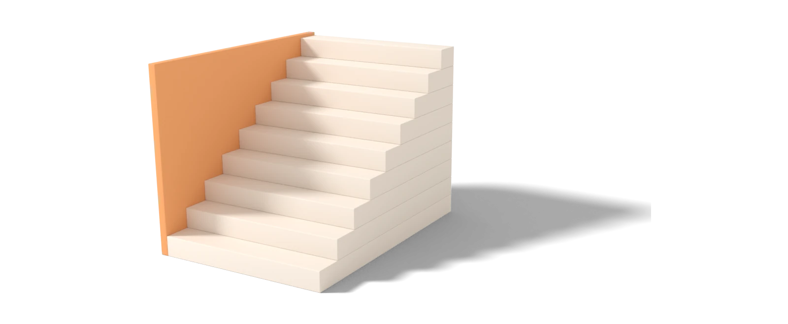
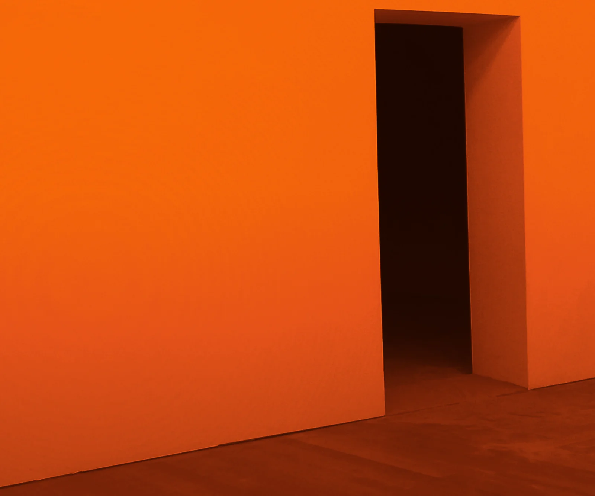

A brand is how you show people the future you can see. Not the logo, not the colours.
The discipline of taking the picture in your head and putting it in front of people you will never meet, in a form they can understand, trust and repeat.
Everything else is decoration.
Every founder carries a picture of the future. The building. The customers. The team of fifty. In your head it is vivid, and because you can see it, you assume it shows.
It does not. A vision that lives in your head is a private hope. A brand is how it becomes a public promise.
A brand is how other people see where you are going
Nobody meets your vision. They meet the pieces you hand them. A customer meets a name, a sign and a few words on a screen. An investor meets a deck and twenty minutes of your time. A new hire meets whatever the last person said about you over lunch.
Each of them builds their own version of you from what they were given. When the pieces disagree, so do the pictures. The customer thinks you are cheap. The investor thinks you are premium. The new hire is not sure what you are. None of them is wrong. They were handed different pieces.
A brand is the work of making the pieces agree, so that everyone who meets the company sees the same place you are going.
Every big brand started as one clear idea
There is a bakery in Hamar Weyne whose entire vision is one sentence: the bread is the same every morning. That sentence decided the sign, which is plain. It decided the voice, which does not shout. It decided the paper, which is brown, with one stamp. It decided what the new baker is told on his first day, before he touches flour. The customer never reads the vision. He tastes it, and it matches the sign.
Volvo has been one word, safety, for so long that people believe it before they look at the car. IKEA has been good design most people can afford for so long that a flat box is enough to say it. Neither is a trick of design. Each is a sentence, chosen once and kept for decades.
Decide what people should believe, then prove it

A brand begins with one question.
What do you want people to believe about you?
Not everything that is true. The one thing. Most founders stall here, because the honest answer means letting go of five other things that are also true. That is the point. A brand is a well-kept refusal.
The baker’s first answers were the ones every bakery in the city already uses. Fresh every day. Baked with love. Nobody believes those, because nobody can check them. The line worth keeping is the one only he can say, and a customer could walk in and test.
The believing comes first. The proving is everything after: the sign, the voice, the way a complaint is answered on a Thursday night. A belief you cannot prove is a slogan. A belief you prove every day is a brand.
If only the founder can explain it, nobody can sell it
Here is a test that takes ten minutes. Write what the company is for, in one sentence. Ask three people on your team to do the same, separately. Compare.
If the sentences match, the brand already exists and design will be quick. If they do not, no logo will close the gap. The gap is the work.
A brand that lives only in the founder cannot travel. The salesman cannot sell it, the manager cannot defend it, the receptionist cannot explain it. Writing it down is not paperwork. It is the moment the vision leaves your head.
Own one thing in people’s minds
People do not hold several ideas about a company. They hold one. It forms in seconds and is rarely revised. If you do not choose that idea, the market chooses it for you, and it is seldom the one you would have picked.
So choose. Fast or premium. Local or global. A tagline that needs a comma is two brands sharing one sentence. A new mark will not fix that. A decision will.
Once the decision is made, design gets easier. The mark has one job. The colour has one job. The voice has one job. Every new piece answers a single question: does this carry the idea, or compete with it?
Trusted brands keep one promise for years
Design gives the decision a face. A mark people recognise at a glance. A voice that sounds the same in a complaint reply as in an advert. A system your team can use without calling you.
The order matters. Design that comes before the decision is decoration, and you will pay for it again in two years. Design that comes after the decision is cheap to keep, because every new piece has a rule to follow.
Then comes the part most companies skip. Keeping it. The same promise, said the same way, for years. That is where trust comes from, and trust is why people pay more.
A brand is a vision people can see

Done well, your brand walks into rooms without you. A customer’s phone at midnight. A boardroom where someone is defending your proposal to people you have never met. A new hire’s first day, when nobody has time to explain.
In each of those rooms the brand speaks for you. If it is clear, it says the right thing. If it is vague, it says whatever the room wants to hear.
That is not marketing. It is leadership at a distance.
So write the sentence. One line, true only of you, that a stranger could check. Say it to a customer, an investor and a new hire this week, and listen for whether they hand it back to you unchanged. When they do, you have a brand. Until then, you have a hope.